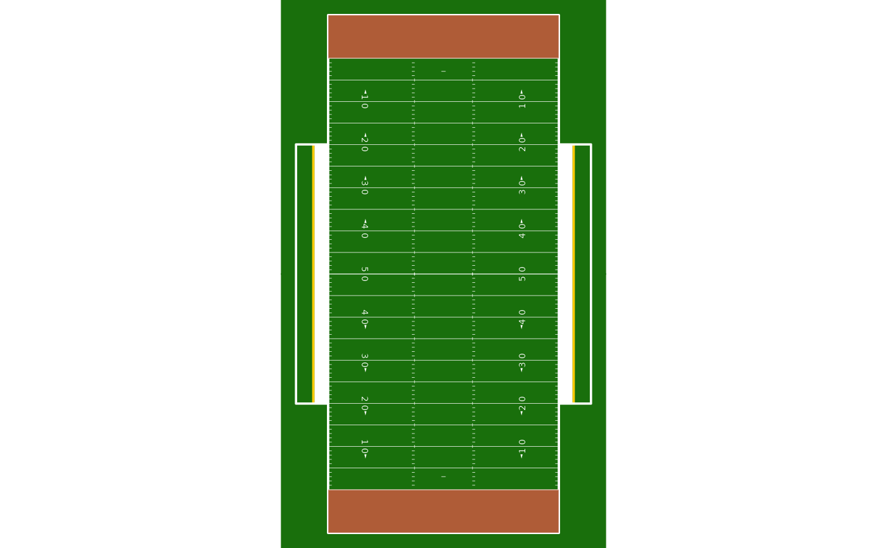

Draws a regulation court, field or rink with 'sportyR' and,
given a team, paints a few of its features in that team's colors from
sdv_team_colors(). The result is a ggplot, so data layers go on top.
These are stylized surfaces built from team colors, not the team's real court, field or rink design: no dataset of real team surface designs (paint colors, center logos, end zone art, special-event floors) exists yet.
Usage
sdv_surface(
sport = c("nfl", "nba", "wnba", "mlb", "nhl", "cfb", "mbb", "wbb"),
team = NULL,
center_logo = FALSE,
...
)Arguments
- sport
One of
supported_sports(). Each maps to a 'sportyR' surface:sport surface "nfl"sportyR::geom_football("nfl")"cfb"sportyR::geom_football("ncaa")"nba","wnba"sportyR::geom_basketball("nba")/("wnba")"mbb","wbb"sportyR::geom_basketball("ncaa")"nhl"sportyR::geom_hockey("nhl")"mlb"sportyR::geom_baseball("mlb")- team
NULL(the default) for the plain regulation surface, or one team name or abbreviation, cleaned byclean_team_abbrs().- center_logo
If
TRUE, draw the team's logo at center court, center ice or midfield. Needs ateam; ignored with a warning for"mlb", whose surface is an infield with no center.- ...
Passed to the 'sportyR' geom:
display_range,rotation,x_trans,y_trans,xlims,ylims, the unit arguments, andcolor_updates, which overrides the team colors feature by feature (seesportyR::cani_color_league_features()for the names).
Value
A ggplot object (ggplot2::ggplot()) with coord_fixed(); add
layers with +.
Details
With a team, these features change; everything else keeps
'sportyR”s regulation colors, so the court stays wood, the field green
and the ice white:
Basketball: the painted area and the court apron take the primary color. The lines drawn inside the paint (restricted arc, free-throw circle dashes, lower defensive boxes) turn black or white, whichever contrasts more with it.
Football: both end zones take the primary color.
Hockey: the center line, center faceoff circle and center faceoff spot take the primary color, or the secondary where the primary is too pale to read on white ice (under 3:1 contrast); the boards take the primary.
Baseball: nothing. No part of a regulation infield is team-colored (the green background is the outfield grass), so the team is checked and the surface stays 'sportyR”s.
Surfaces use 'sportyR”s coordinates: the origin at the center, in feet
(yards for football). The center logo is sized in those units (12 feet
on a court, 10 yards on a field, 24 feet on a rink) and follows
x_trans, y_trans, rotation and the unit arguments.
Examples
# \donttest{
if (requireNamespace("sportyR", quietly = TRUE)) {
library(ggplot2)
# the regulation surface
sdv_surface("nhl")
# in a team's colors, with its logo at center court, and shots on top
shots <- data.frame(x = c(-40, -35, 30), y = c(5, -12, 0))
sdv_surface("nba", "BOS", center_logo = TRUE) +
geom_point(aes(x, y), data = shots, color = "red", size = 3)
# sportyR arguments pass through
sdv_surface("cfb", "TEX", rotation = 90)
}

# }